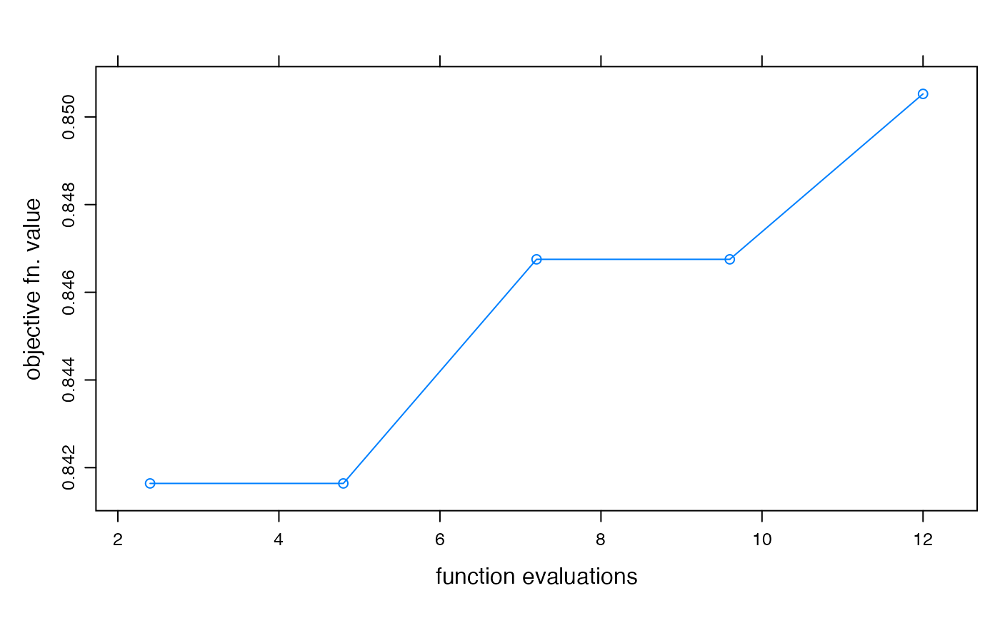

R/fitByDE.R
fitByDE.RdFit a hydromad model using the DE (Differential Evolution) algorithm.
fitByDE(
MODEL,
objective = hydromad.getOption("objective"),
control = hydromad.getOption("de.control")
)a model specification created by hydromad. It
should not be fully specified, i.e one or more parameters should be defined
by ranges of values rather than exact values.
objective function to maximise, given as a
function(Q, X, ...). See objFunVal.
settings for the DE algorithm. See
DEoptim.control.
the best model from those sampled, according to the given
objective function. Also, these extra elements are inserted:
the result from DEoptim.
the objective function used.
total number of evaluations of the model simulation function.
timing vector as returned by system.time.
library("DEoptim")
#> Loading required package: parallel
#>
#> DEoptim package
#> Differential Evolution algorithm in R
#> Authors: D. Ardia, K. Mullen, B. Peterson and J. Ulrich
data(Cotter)
x <- Cotter[1:1000]
## IHACRES CWI model with power law unit hydrograph
modx <- hydromad(x, sma = "cwi", routing = "powuh")
modx
#>
#> Hydromad model with "cwi" SMA and "powuh" routing:
#> Start = 1966-05-01, End = 1969-01-24
#>
#> SMA Parameters:
#> lower upper
#> tw 0 100
#> f 0 8
#> scale NA NA
#> l 0 0 (==)
#> p 1 1 (==)
#> t_ref 20 20 (==)
#> Routing Parameters:
#> lower upper
#> a 0.01 60
#> b 0.50 3
#> c 0.50 2
foo <- fitByDE(modx, control = DEoptim.control(itermax = 5))
summary(foo)
#>
#> Call:
#> hydromad(DATA = x, sma = "cwi", routing = "powuh", a = 8.4263,
#> b = 1.25033, c = 1.76043, tw = 96.2573, f = 5.15738, scale = 0.00131429)
#>
#> Time steps: 900 (0 missing).
#> Runoff ratio (Q/P): (0.7028 / 2.285) = 0.3075
#> rel bias: -3.69e-18
#> r squared: 0.7309
#> r sq sqrt: 0.8295
#> r sq log: 0.8256
#>
#> For definitions see ?hydromad.stats
#>
## return value from DE:
str(foo$fit.result)
#> List of 2
#> $ optim :List of 4
#> ..$ bestmem: Named num [1:5] 8.43 1.25 1.76 96.26 5.16
#> .. ..- attr(*, "names")= chr [1:5] "a" "b" "c" "tw" ...
#> ..$ bestval: num -0.851
#> ..$ nfeval : int 12
#> ..$ iter : int 5
#> $ member:List of 6
#> ..$ lower : Named num [1:5] 0.01 0.5 0.5 0 0
#> .. ..- attr(*, "names")= chr [1:5] "a" "b" "c" "tw" ...
#> ..$ upper : Named num [1:5] 60 3 2 100 8
#> .. ..- attr(*, "names")= chr [1:5] "a" "b" "c" "tw" ...
#> ..$ bestmemit: num [1:5, 1:5] 10.99 10.99 10.99 10.99 8.43 ...
#> .. ..- attr(*, "dimnames")=List of 2
#> .. .. ..$ : chr [1:5] "1" "2" "3" "4" ...
#> .. .. ..$ : chr [1:5] "a" "b" "c" "tw" ...
#> ..$ bestvalit: num [1:5] -0.842 -0.842 -0.847 -0.847 -0.851
#> ..$ pop : num [1:50, 1:5] 12.4 25.7 10.5 24.9 13.2 ...
#> ..$ storepop : list()
#> - attr(*, "class")= chr "DEoptim"
## plot objective function value convergence over time
xyplot(optimtrace(foo),
type = "b",
xlab = "function evaluations", ylab = "objective fn. value"
)
